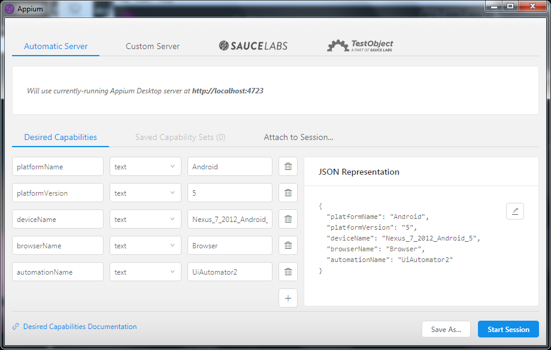
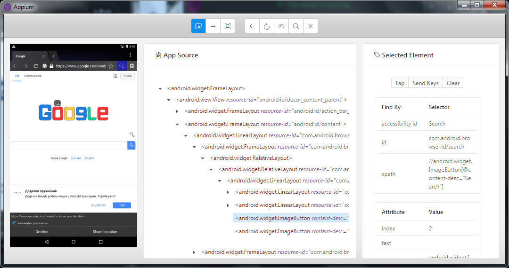

UiAutomator 2
1. Запуск эмулятора устройств
Откройте консоль и перейдите в папку C:\Users\Cartish\AppData\Local\Android\tools\
Чтобы запустить нужное устройство введите команду:
emulator -list-avds
emulator -avd Nexus_7_2012_Android_5

2. Запуск сервера Appium (desktop версия)

Оставьте Host и Port по умолчанию. Нажмите кнопку Start Server.

Нажмите на кнопку Start Inspector Session
В открывшемся окне настройте JSON следующим образом
{
"platformName": "Android",
"platformVersion": "5",
"deviceName": "Nexus_7_2012_Android_5",
"browserName": "Browser",
"automationName": "UiAutomator2"
}

Нажмите кнопку Start Session
Если все сделано правильно, вам откроется окно UiAutomator 2

Created with the Personal Edition of HelpNDoc: Write EPub books for the iPad